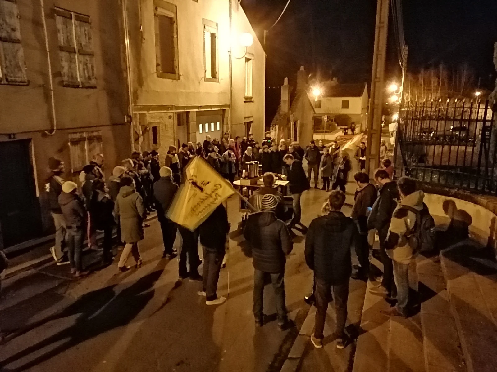

Compte rendu local
À Bressuire, des paysans mobilisés pour vivre de leur travail
Date indiquée par Facebook · 30 janvier 2024
Repères éditoriaux
À l’appel de la Confédération paysanne, une soixantaine de personnes se sont retrouvées devant la sous-préfecture de Bressuire, selon notre compte rendu publié le 30 janvier 2024. Le revenu était au cœur des échanges, avec le statut des paysans, l’alimentation et la biodiversité.
Texte conservé avec la publication
Une soixantaines de personnes se sont retrouvées ce lundi 29 février à 19 h devant la Sous-préfecture de Bressuire à l’appel de la Confédération Paysanne.
C’était l’occasion de regrouper doléances et proposition avant qu’une délégation soit reçue par la sous-préfète.
Un riche échange entre agriculteurs et autres professions venues en soutien.
Beaucoup de choses ont été abordées. Bien sûr les revendications portant sur le revenu, mais aussi sur le statut de paysan, son rôle pour l’équilibre alimentaire et la biodiversité.
La question de la création d’une sécurité sociale alimentaire a été abordée...
#conféderationpaysanne
#deuxsevres
#bressuire

Sources
Archive rouge · export Facebook · AR-0002-FB-01488
À lire aussi · À Cerizay, le rassemblement de la Confédération paysanne en vidéo · Le lien vidéo